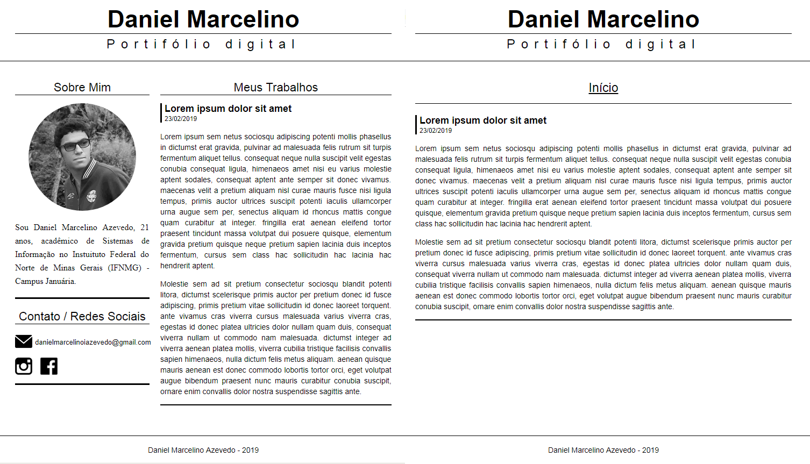

Sobre Mim

Sou Daniel Marcelino Azevedo, 21 anos, acadêmico de Sistemas de Informação no Instuituto Federal do Norte de Minas Gerais (IFNMG) - Campus Januária.
Meus Trabalhos

Em 2019 dei início ao curso de Bacharel em Sistemas de Informação no IFNMG - Januária. Desenvolvi este website para registrar meus trabalhos realizados ao longo do curso.
O site consiste em paginas estáticas, apenas front-end.